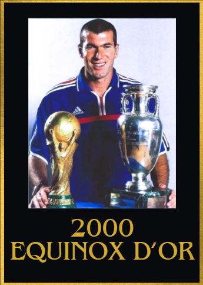

2000s Equinox d'Or Winners
1999/2000
1st: Zinedine Zidane 🇫🇷 Juventus
2nd: Luis Figo 🇵🇹 Barcelona
3rd: Rivaldo 🇧🇷 Barcelona
4th: Alessandro Nesta 🇮🇹 Lazio
5th: Andriy Shevchenko 🇺🇦 AC Milan

Achievements
- 18 goal contributions
- Euros Winner
- Euros best player
Key Moments
- Goal vs Portugal in Euros Semi final
- MOTM vs Denmark
- Goal vs Spain in Euros quarter final
- Game winning goal vs Roma and Leece
2000/2001
1st: Raul Gozalez 🇪🇸 Real Madrid
2nd: Luis Figo 🇵🇹 Real Madrid
3rd: Oliver Kahn 🇩🇪 Bayern München
4th: David Beckham ğŸ´ó §ó ¢ó ¥ó ®ó §ó ¿ Manchester United
5th: Michael Owen ğŸ´ó §ó ¢ó ¥ó ®ó §ó ¿ Liverpool

Achievements
- 46 goal contributions
- UEFA champions league semi finalist
- UEFA Champions league top scorer
- La liga champion
- Pichichi winner
Key Moments
- 3 goal contributions vs Galatasaray in the UEFA champions league quarter finals
- Assist vs Bayern München in the UEFA champions league semi finals
- Goal vs galatasaray in the UEFA Super Cup final
- Brace vs Barcelona, Real Zaragoza, Real Valladolid and Malaga
- 2 assists vs Real Oviedo
- 2 goals and 1 assist vs Alaves
2001/2002
1st: Michael Ballack 🇩🇪 Bayer 04 Leverkusen
2nd: Zinedine Zidane 🇫🇷 Real Madrid
3rd: Oliver Kahn 🇩🇪 Bayern München
4th: Raul Gonzalez 🇪🇸 Real Madrid
5th: Rivaldo 🇧🇷 Barcelona

Achievements
- 46 goal contributions as a CAM/CM
- World Cup runner up
- UEFA Champions league runner up
- Bundesliga runner up
Key Moments
- 2 goal contributions vs Kaiserslautern in the bundesliga
- Brace vs Liverpool in the UEFA Champions league
- Goal vs Manchester United in the UEFA Champions semi finals
- 2 goal contributions vs Deportiva La coruna
- 3 goal contributions vs Saudi Arabia in the world cup
- 2 decisive goals in the world cup quarters and semi finals to send Germany to the World cup final
- Brace vs Freiburg, Kaiserslautern and Hertha BSC
2002/2003
1st: Zinedine Zidane 🇫🇷 Real Madrid
2nd: Pavel Nedved 🇨🇿 Juventus
3rd: Thierry Henry 🇫🇷 Arsenal
4th: Ruud Van Nistelrooy 🇳🇱 Manchester United
5th: Ronaldo Nazario 🇧🇷 Real Madrid

Achievements
- La Liga winner
- 38 goal contributions
- UEFA Champions League semi finalist
- UEFA Super cup winner
- Intercontinental cup winner
Key Moments
- 2 assists vs Borrusia Dortmund
- Goal vs Juventus in the UEFA Champions league semi final
- 2 assists vs Manchester United in the UEFA Champions league quarter finals
- 3 goal contributions vs Malta
- 1 goal and 2 assists vs Valencia
- 2 goal contributions vs RCD Mallorca in the Supercopa de españa final
- 2 assists vs Atletico Madrid
- 1 goal and 1 assist vs Sevilla, Deportivo La Coruña and Racing
2003/2004
1st: Thierry Henry 🇫🇷 Arsenal
2nd: Deco 🇵🇹 Porto
3rd: Ronaldinho 🇧🇷 Barcelona
4th: Adriano 🇧🇷 Inter Milan
5th: Andriy Shevchenko 🇺🇦 AC Milan

Achievements
- 65 goal contributions
- Premier league winner(as an invincible)
- Premier league top scorer
- Premier league player of the season award
Key Moments
- Brace vs Celta Vigo
- 2 goals and 2 assists vs Internazionale Milan
- Hat trick of assists vs Birmingham City
- Brace vs Switzerland in the euros
- Poker vs Leeds United
- A hat trick vs Liverpool
- 2 goals and 1 assist vs Wolves
"
- 1 goal and 2 assists vs Leeds
2004/2005
1st: Frank Lampard 🴠Chelsea
2nd: Ronaldinho 🇧🇷 Barcelona
3rd: Samuel Eto'o 🇨🇲 Barcelona
4th: Steven Gerrard 🴠Liverpool
5th: Diego Forlan 🇺🇾 Villarreal

Achievements
- 46 goal contributions as a CM
- Premier League winner
- UEFA Champions League semi finalist
- EPL Player of the season
- EFL cup winner
Key Moments
3 goal contributions vs Bayern in the UEFA Champions League semi finals
Assist vs Manchester United and Liverpool
2 assists vs Blackburn Rovers, Middlesborough and Norwich City
Crucial match winning Goal vs Manchester united in the EFL cup semi final
Brace vs Tottenham Hotspur
2005/2006
1st: Ronaldinho 🇧🇷 Barcelona
2nd: Andrea Pirlo 🇮🇹 AC Milan
3rd:Thierry Henry 🇫🇷 Arsenal
4th: Samuel Eto'o 🇨🇲 Barcelona
5th: Andriy Shevchenko 🇺🇦 A.C. Milan
Achievements
- UEFA Champions League Winner
- La liga winner
- Club world cup finalist
- 51 goal contributions
- Supercopa de España winner
Key Moments
- Assist vs AC Milan in the UEFA champions league semi final
- 1 goal 2 assists vs Werder Bremen
- Hat trick vs Udinese
- Brace vs Deportivo La Coruña and Real Madrid
- 2 assists vs Osasuna and Villarreal
- 1 goal and2 assists vs Real Betis and Deportivo La Coruña
- 2 goals and 1 assist vs Real Sociedad
- 1 goal and 1 assist vs Real Betis in the Supercopa de España final
2006/2007
1st: Cristiano Ronaldo 🇵🇹 Manchester United
2nd: Ricardo Kaka 🇧🇷 AC Milan
3rd: Francesco Totti 🇮🇹 AS Roma
4th: Andrea Pirlo 🇮🇹 AC Milan
5th: Ruud Van Nistelrooy 🇳🇱 Real Madrid
Achievements
- Premier League POTY
- UEFA champions league semi finalist
- Premier league winner
- FA Cup finalist
- 52 goal contributions
Key Moments
- 10/10 rating vs Roma in the UEFA Champions League quarter final (with 3 goal contributions)
- 1 goal vs AC Milan in the UEFA Champions League Semi finals
- 2 assists vs Bolton Wanderers and Blackburn Rovers
- Game winning goal vs Manchester City
- 1 goal and 1 assist vs Manchester City, Tottenham Hotspur and Watford
- Brace vs Aston Villa and Wigan/Li>
- Game winning assist vs Liverpool and Tottenham Hotspur
- 2 goals and 1 assist vs Reading
- 2 goals and 1 assist vs Belgium
2007/2008
1st: Cristiano Ronaldo 🇵🇹 Manchester United
2nd: Fernando Torres 🇪🇸 Liverpool
3rd: Xavi Hernandez 🇪🇸 Barcelona
4th: Iker Casillas 🇪🇸 Real Madrid
5th: Lionel Messi 🇦🇷 Barcelona

Achievements
- 54 goal contributions
- UEFA champions league winner
- UEFA Champions league top scorer
- European golden shoe
- Premier league winner
- Community shield winner
- Premier league player of the season
Key Moments
- Goal vs Chelsea in the UEFA champions league final
- Brace vs Dinamo Kyiv
- 1 goal and 3 assists vs Aston Villa
- Hat trick vs Newcastle United
- 2 goal contributions vs Czech Republic
- 1 goal and 1 assist vs Sporting C.P.
- 2 goals and 1 assist vs Newcastle United and West Ham United
- Goal vs Liverpool and Arsenal
- Brace vs Wigan, Blackburn, Fulham, Everton, Portsmouth, Tottenham Hotspur and Bolton Wanderers
2009/2009
1st: Lionel Messi 🇦🇷 Barcelona
2nd: Xavi Hernández 🇪🇸 Barcelona
3rd: Cristiano Ronaldo 🇵🇹 Manchester United
4th: Andres Iniesta 🇪🇸 Barcelona
5th: Samuel Eto'o 🇨🇲 Barcelona/Inter Milan

Achievements
- La liga winner
- Copa Del Rey winner
- UEFA Champions league winner
- La Liga Player of the season
- UEFA champions league top scorer
- 62 Goal contributions
Key Moments
- Scored a header vs Manchester united in the 2009 UEFA Champions League final
- Assist vs Chelsea in the UEFA Champions league semi final
- 2 goals and 1 assist vs Bayern München
- Brace vs Shakthar Donetsk
- 1 goal and 2 assists vs Basel
- 2 goals and 1 assist vs Sporting Gijon, CD Numancia and Real Madrid
- 2 assists vs Sporting Gijon and Real Betis and UD Almeria
- Brace vs Sevilla
- Hat trick vs Atletico Madrid
- 1 goal and 1 assist vs Athletic Bilbao